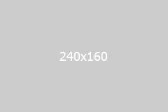

Полезная информация
Полезная информация


Полезная информация
Энтерофурил противомикробный препарат широкого спектра действия, не обладающий системным действием и применяемый для лечения диареи инфекционной этиологии. В состав препарата Энтерофурил входит активное вещество нифуроксазид, лекарственное средство группы производных 5-нитрофурана. Препарат обладает бактерицидным и бактериостатическим эффектом в отношении большинства возбудителей острых кишечных инфекций. Противомикробное действие нифуроксазида является дозозависимым, так низкие и средние дозы препарата оказывают бактериостатических Противомикробное действие нифуроксазида является дозозависимым, так низкие и средние дозы препарата оказывают бактериостатических эффект в отношении патогенной микрофлоры, а высокие – бактерицидный.
Бактериостатический механизм действия препарата связан с ингибированием активности фермента дегидрогеназы, что приводит к нарушению нормального течения синтеза жизненно необходимых соединений в клетке микроорганизма.
Симптомы диареи
Энтерофурил противомикробный препарат широкого спектра действия, не обладающий системным действием и применяемый для лечения диареи инфекционной этиологии. В состав препарата Энтерофурил входит активное вещество нифуроксазид, лекарственное средство группы производных 5-нитрофурана. Препарат обладает бактерицидным и бактериостатическим эффектом в отношении большинства возбудителей острых кишечных инфекций.
Что препринять?
Бактерицидный и бактериостатический эффект энтерофурила.
Бактерицидный и бактериостатический эффект энтерофурила.
Энтерофурил противомикробный препарат широкого спектра действия, не обладающий системным действием и применяемый для лечения диареи инфекционной этиологии. В состав препарата Энтерофурил входит активное вещество нифуроксазид, лекарственное средство группы производных 5-нитрофурана. Препарат обладает бактерицидным и бактериостатическим эффектом в отношении большинства возбудителей острых кишечных инфекций. Противомикробное действие нифуроксазида является дозозависимым, так низкие и средние дозы препарата оказывают бактериостатических эффект в отношении патогенной микрофлоры, а высокие – бактерицидный. В определённый момент практически всем приходится сталкиваться с аллергией на продукты питания и непереносимостью пищи. Часто люди испытывают болезненную реакцию на какие - то продукты питания, и они начинают задаваться вопросом, не аллергия ли это. Каждый третий заявляет о том, что у него аллергия на пищу или же, что они в семье пересматривают свою систему питания, так как есть подозрение, что у одного из членов семьи аллергия на продукты питания. Однако, всего лишь около трёх процентов детей имеют клинически подтвержденные аллергические реакции на пищевые продукты. Среди взрослых количество страдающих аллергией составляет всего лишь приблизительно один процент населения.
Энтерофурил, как средство первой необходимости
Энтерофурил противомикробный препарат широкого спектра действия, не обладающий системным действием и применяемый для лечения диареи инфекционной этиологии. В состав препарата Энтерофурил входит активное вещество нифуроксазид, лекарственное средство группы производных 5-нитрофурана. Препарат обладает бактерицидным и бактериостатическим эффектом в отношении большинства возбудителей острых кишечных инфекций.
Популярные статьи
- О диарее
- Если ребенок отравился.
- Понос у ребенка после применения антибиотиков.
- Чем опасна алкогольная интоксикация или похмелье.
- Если ребенок отравился: лечение отравления у детей.
- Понос у ребенка после применения антибиотиков.